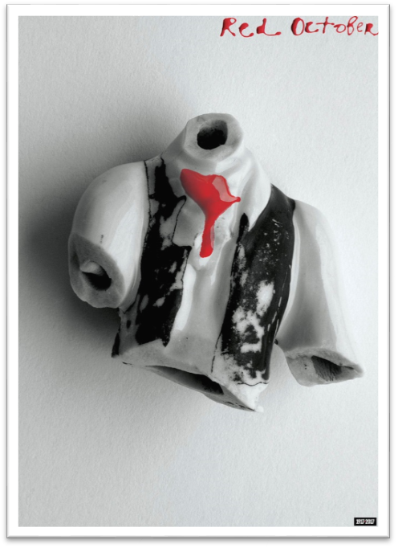
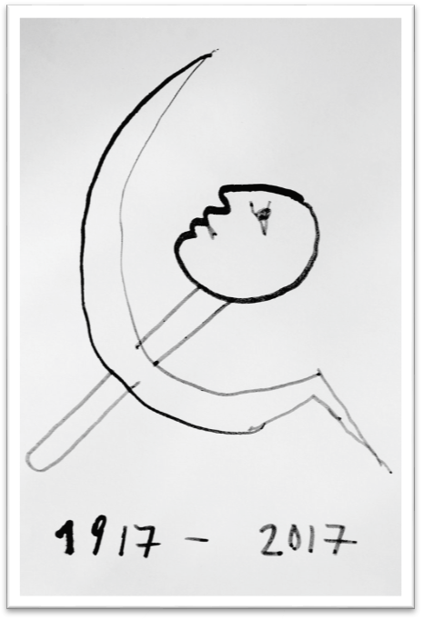
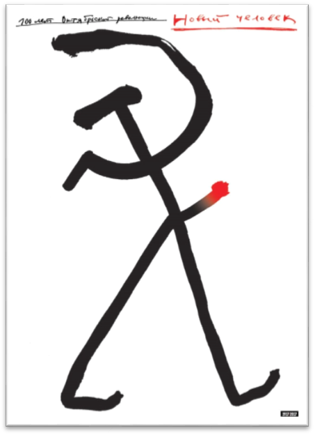
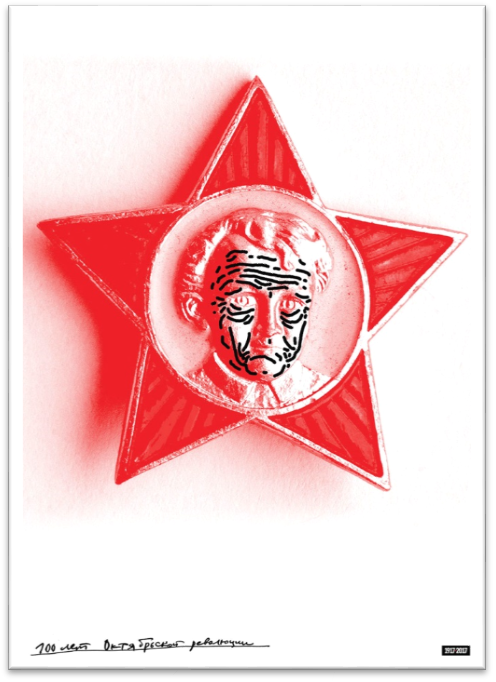
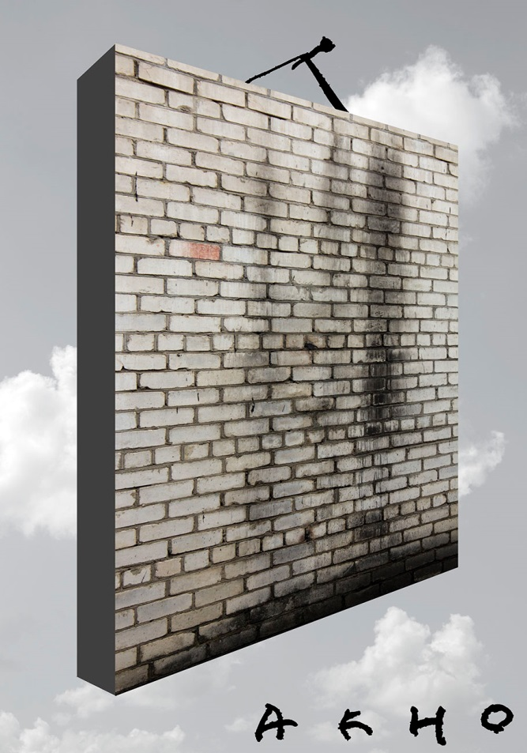
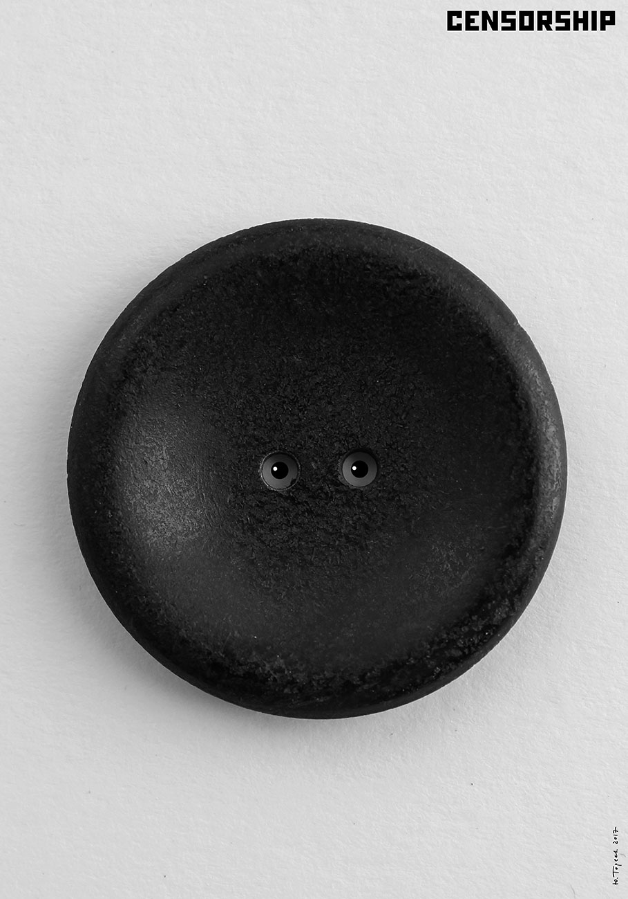
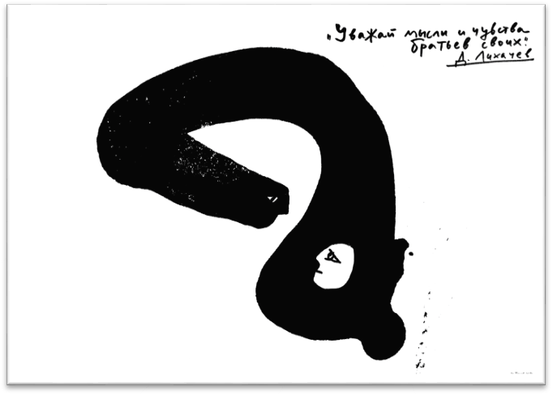
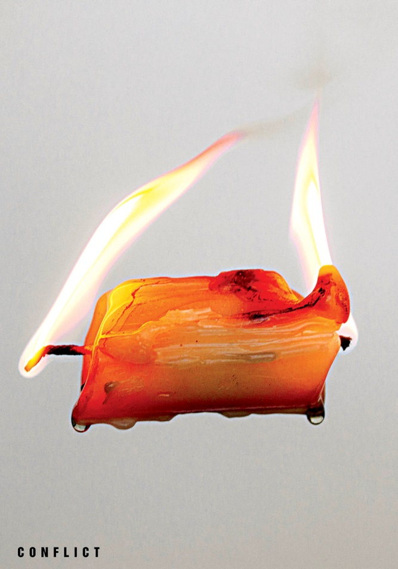
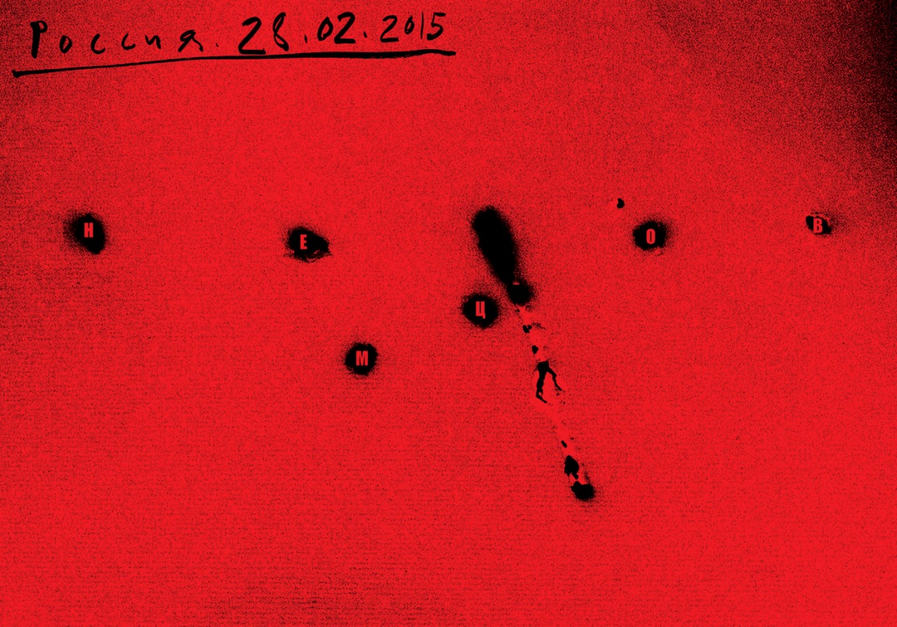
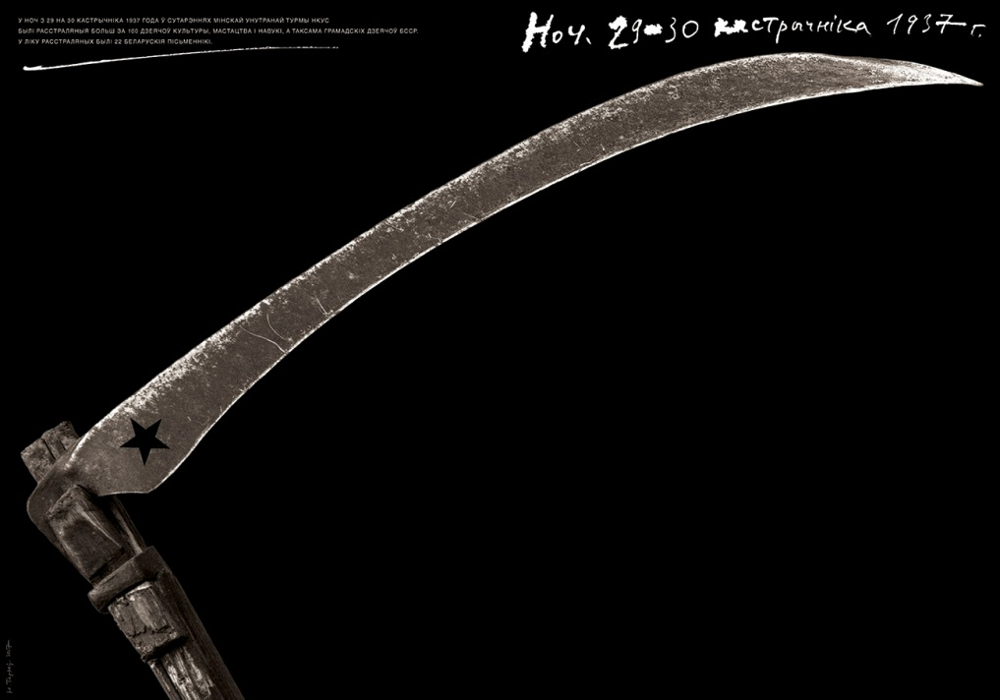

-
Нам критика из года в год
нужна, запомните,
как человеку – кислород,
как чистый воздух – комнате.
В.Маяковский 1929г.
Red October (2017)
С нашей сегодняшней точки зрения «Красный Октябрь» выглядит как неуклюжий подросток без головы, рук, и ног, с обрывком пионерского галстука на шее, в проеденной молью и годами жилетке. А ведь он когда-то и мыслил, и много кой-чего делал, и даже наведывался в соседние страны: бродил по Европе в виде «призрака коммунизма»… Многие хорошие люди поверили в него, старались поддержать, как могли.
Но, увы – История сильнее личностей, у неё свои законы (а порой и причуды). Она рассудила иначе, чем К. Маркс и В. Маяковский. В наших палестинах всё вернулось на круги своя.
И только слушая гимн Интернационал и песни первых лет Октября, мы думаем: где ты, гордый Буревестник?
1917 – 2017
Идеал человека 1917 года – это всего лишь орудие труда: молот в сотрудничестве с серпом. Он забивает гвозди собственным (извиняюсь) носом. Все другие органы тела для него излишни. Ведь «труд сотворил человека»… Конечно, это шарж, или карикатура на идеал советского человека (с точки зрения властей).
Но почему плакат объявляет годы жизни этого недочеловека от 1917 до 2017? Значит, он представляет не только исторический интерес, но существует и в наши дни? Если вдуматься, то так и есть. Спросите любого руководителя производства – на заводе, в «совхозе», в научном учреждении, на транспорте и т.д. – кого ценит и уважает этот руководитель больше всех?
Ответ апельсина яснее и кратче: трудягу, выполняющего и перевыполняющего норму. Лучшие люди, по словам украинского поэта Павла Тычины – это
«Юнакi, що завше норму
Подвоять-потроять».
Мои ровесники хорошо помнят, как в 1980-е годы экономика СССР угрожающе покачнулась. Понадобились экстренные меры по её поддержке. Президент М.С.Горбачёв предложил предпринять (осуществить) «ускорение» (то есть заставить всех трудящихся работать вдвое-втрое интенсивнее. Конечно, из этой затеи ничего не вышло, и Горбачёву пришлось уйти в отставку).
Новый человек (100 лет Октябрьской революции)
Чем отличается этот «Новый человек» от предыдущего? В основе его тела – те же серп и молот, только теперь он бодро шагает вперёд, а дорогу ему указывает некий металлический отросток, раскалённый на конце. Это – самая примечательная часть его тела: голова уже превратилась в обыкновенный молоток.
Куда несут его железные ноги? Неужели вся его деятельность – это всего лишь бессильные потуги? Приходится признать, что прав Экклезиаст: «Что было, то и будет. И нет нового под солнцем».
100 лет Октябрьской революции
Глядя на все злоключения Октябрьской революции и Советской власти, Володя Ульянов постарел от огорчения на 100лет. Его глаза выражают ужас и недоумение: не за то он боролся, не за то погиб.
Наступит ли время, когда разгладятся безобразные морщины на лице вождя мирового пролетариата? И с кого же теперь «делать жизнь» русским детям? Может быть, с Винни-Пуха?
Акно 2017
Бесполезно задавать вопросы о будущем. Заглянуть в него так же невозможно, как в это «окно», плотно заложенное кирпичём. Уж сколько раз обманывали нас благие обещания и радужные перспективы. Дай Боже, чтобы хоть как-нибудь дойти до нормального капитализма «с человеческим лицом», как в Германии, Швеции, Финляндии…
Cenzura 2017
Октябрьская революция обещала трудящимся неоценимые блага: свободу, равенство, братство. Первое в списке следовало понимать как право любого человека говорить, писать и поступать так, как он желает (разумеется, не переступая запретов, перечисленных в уголовном кодексе). На деле всё это оказалось совсем иначе. Всё, что было написано для печати, подвергалось строгой (точнее – жестокой) цензуре. Вы видите её страшное лицо на плакате Ю.Тореева. Это тяжёлый чугунный диск, непробиваемый никакими аргументами и никакой логикой. Вместо мышления эта чугунная голова пользуется инструкциями, «спущенными» сверху, от высшей власти.
Сколько прекрасных писателей, поэтов, артистов в годы советской власти погибли в рудниках Восточной Сибири, на Магадане, на стройках первых пятилеток! Этой чугунной пуговице с бессмысленным взглядом металлических глаз было поручено решать, что можно читать и слушать советскому человеку, а чего нельзя.
Плакат Юрия Тореева не уступает лучшим работам Сигео Фукуда по изобретательности, лаконизму и силе воздействия на зрителя.
Тula 2 «Уважай мысли и чувства братьев своих» (Д. Лихачёв)
На плакате изображена беседа двух существ: человека и змеи. Они мирно беседуют, делятся мыслями и чувствами (по совету Д. Лихачёва). В известном смысле они братья: у них одно змееобразное тело. Однако, что-то нам подсказывает, что в данном случае никакого взаимного уважения мыслей и чувств нет и быть не может. Один из собеседников – змей, другой – человек. Их общее тело имеет форму вопросительного знака: этим Художник вторично подчёркивает невозможность взаимного уважения беседующих.
Здесь фантазия Художника и его изобретательность достигают немыслимых высот, наряду с техническим мастерством – таким большим, что оно становится незаметным.
Сonflict 2015
Кроме «свободы», на знамени Советов было написано: «равенство» и «братство». Как осуществлялись эти лозунги – видим на плакате «Conflict». Провозглашённые в Конституции законы не обеспечили нормального развития первого в мире государства рабочих и крестьян. Уже с первых шагов Советской власти возникли конфликты в самых разных областях производства, культуры, органов управления. Источником этих конфликтов было несовершенство системы социалистического производства.
Юрий Тореев показал это в ярком (буквально) образе: свеча сгорает с двух концов, а государство деградирует от двух противоположных факторов: неумелости управления и недовольства трудящихся своим положением.
К чему это привело в конце ХХ века – мы знаем. Свеча сгорела, но трудности и противоречия остались и в ХХI веке. «Лучший, талантливейший поэт нашего времени» предвидел в истории России немалые сложности:
-
«О,звериная! О,детская! О,копеечная! О,великая!
Какими названиями тебя ещё звали?
Как обернёшься ещё, двуликая?
Стройной постройкой,
грудой развалин? (В.Маяковский)
Жизнь покажет.
НЕМЦОВ (Россия 28.02.2015)
-
Кровавых капель /пунктирный путь
Ползёт по земле, - недаром кругла!
Кто-нибудь / кого-нибудь
Подстреливает / из-за угла. (В.Маяковский)
Убийство Б.Е. Немцова вызвало возмущение и гнев общественности. Неужели в ХХI веке, в цивилизованных странах ещё практикуется решение политических и экономических споров (проблем) путём террора – выстрела из-за угла? Ведь уже доказано наукой и практикой, что личность в истории не играет решающей роли. История идёт своим, иной раз непонятным для нас путём. Кроме того, практика показала, что на место неугодного кому-то правителя приходит ещё более неугодный. Недаром ведь жив анекдот о сиракузской бабушке, которая молилась за здоровье ненавистного всем тирана (она знала по опыту, что следующий тиран будет ещё хуже).
Простите, читатель, за легкомысленный тон моего письма: это смех сквозь слёзы. Борис Немцов был любим и уважаем народом России и соседних стран. Его безвременная гибель от руки преступника поразила всех, знавших его. Возник подсознательный страх: оказывается, любой человек не защищён от произвола преступника.
Плакат Юрия Тореева поражает силой эмоционального воздействия. Густо-красный фон невозможно долго видеть: он возбуждает сильное сердцебиение. Буквы-точки бьют по черепу, как пули из пистолета. Чёрная дубинка – это орудие решения неразрешимых проблем, символ бандитского террора.
Позор убийцам!
Nocz 1937 (2017)
Плакат Юрия Тореева настолько выразителен, а события 1937г. в СССР настолько известны, что излишне добавлять наши комментарии к массе опубликованных. Плакат Ю.Т. кратко и выразительно сообщает: государственный террор 1937 г. подобен косе, не щадящей никакой « травы»: ни худой, ни доброй. Память о невинных жертвах мы сохраним в наших сердцах.
Л. Миронова,
25.03.2018